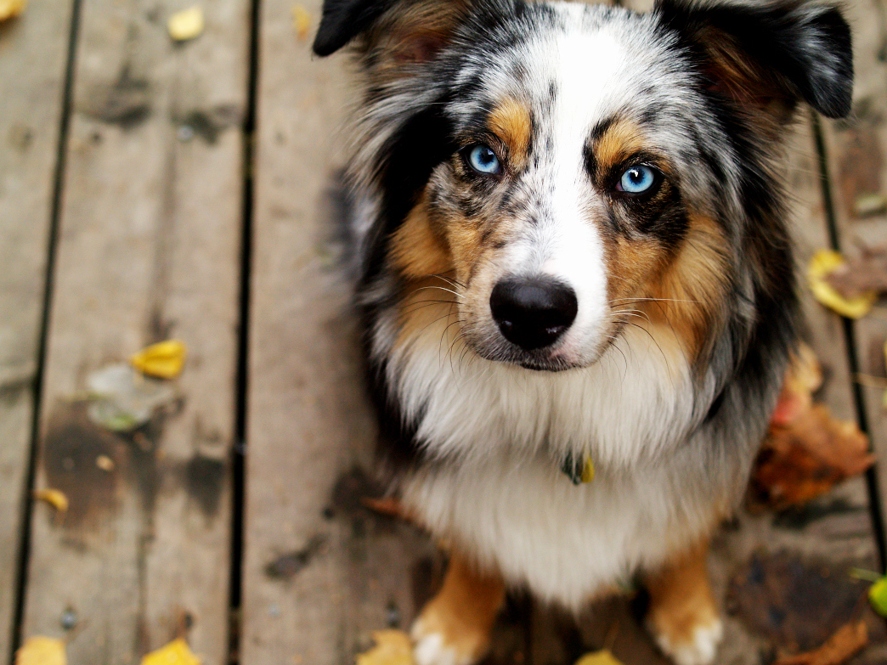

Images:

My Daily schedule:
- Wake Up
- Go outside and Have Breakfast
- Go for a Walk
- Play Outside
- Rest
- Have Lunch
- Go for Walk 2
- Do Tricks
- Rest
- Have dinner
- Go to Dog Park
- Go to Sleep
| Date | Event | Age |
|---|---|---|
| April 27, 2016 | My Birth | 0 |
| June 30, 2016 | I met my New Family: The Takacsy's | 2 Months |
| July 18, 2016 | First Vet Appointment | 2 and a Half Months |
| July 21, 2016 | My first Instagram account | Almost 3 Months |